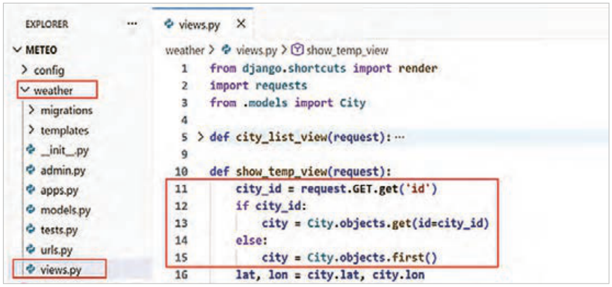
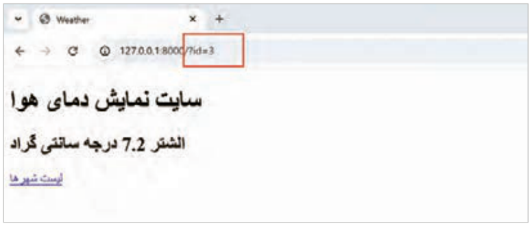
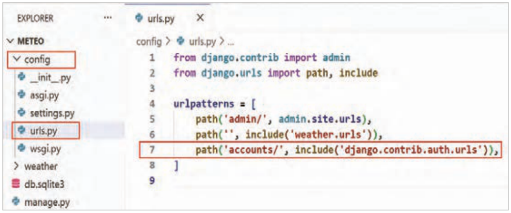
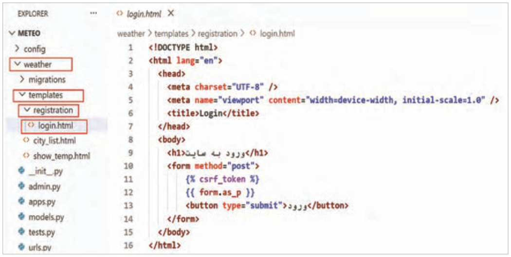
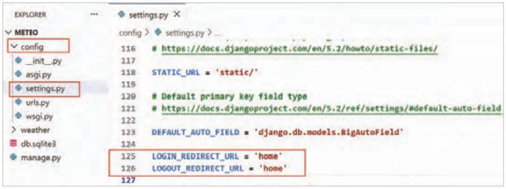
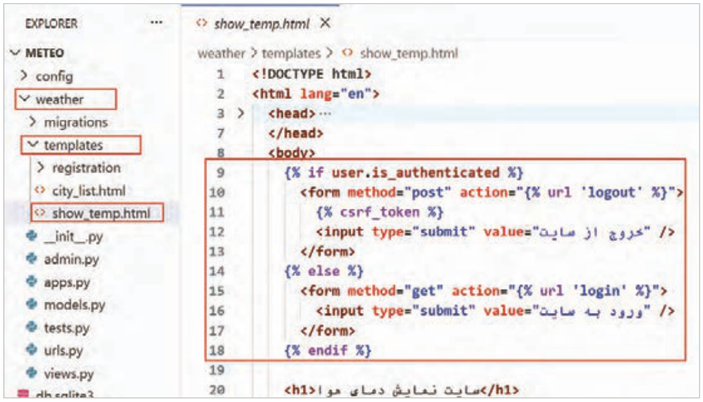
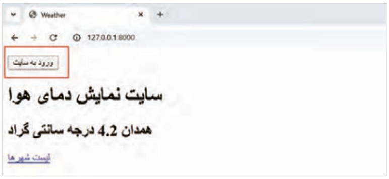
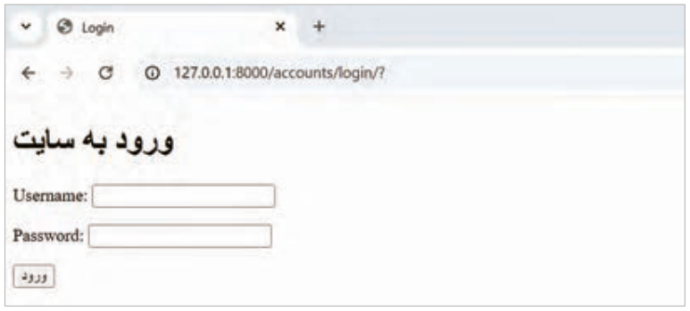
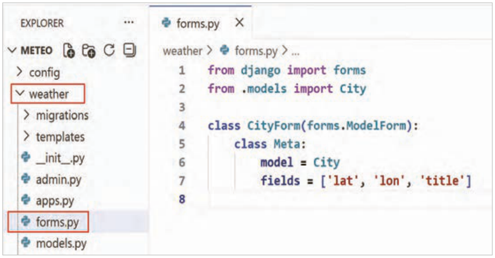
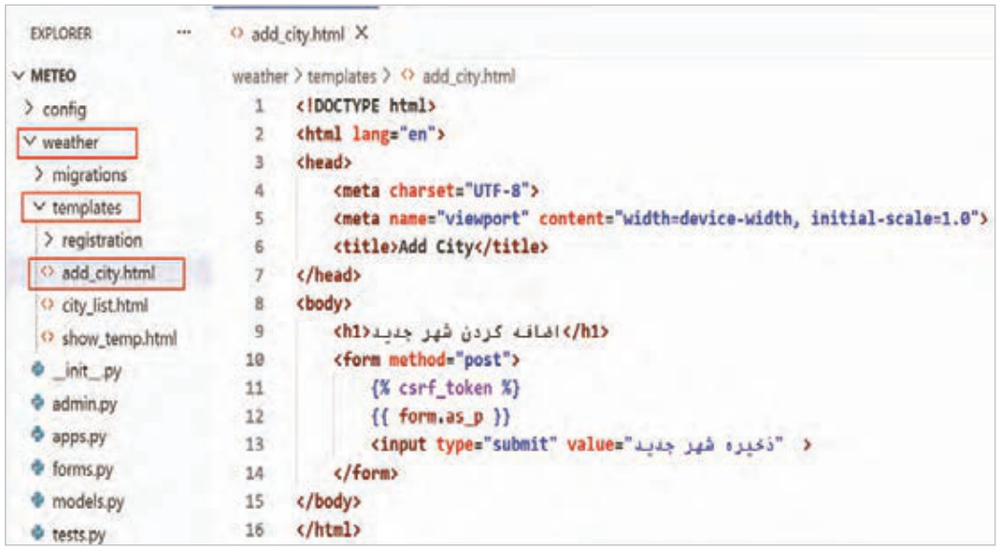

خط 10: برای اینکه نام شهرها قابلیت کلیک شدن داشته باشند، یک تگ a درون تگ p ایجاد شده و جهت نمایش عنوان لینک، از متغیر {{ item.title }} استفاده شده است. آدرس لینک (href) به صفحه اصلی اشاره کرده و متغیر {{ item.id }} به پارامتر id مقدار داده است.
این کد id را به درخواست GET اضافه و به صفحه اصلی ارسال میکند. به عنوان مثال اگر آیدی شهر انتخاب شده 11 باشد، کاربر به آدرس زیر منتقل میشود:
http://127.0.0.1:8000/?id=11
در گام بعد، views.py را باز کنید و show_temp_view را همانند شکل 56 تغییر دهید.

شکل ۵۶: استفاده از id جهت انتخاب شهر
توضیحات کدها:
خط 11: مقدار پارامتر id که از طریق متد GET در نوار آدرس ارسال شده است، در متغیر city_id ذخیره میشود.
درصورتیکه پارامتر id در نوار آدرس وجود نداشته باشد، تابع get('id') که بعد از GET استفاده شده است، مقدار city_id را برابر None ذخیره خواهد کرد.
خط 13: اگر city_id مقدار داشته باشد، با استفاده از ORM جنگو، شهر انتخاب شده توسط کاربر، بهصورت یک شیء (object)، در متغیر city ذخیره میشود.
خط 15: اگر city_id برابر None باشد (id در نوار آدرس وجود نداشته باشد)، اولین شهر از پایگاه داده واکشی میشود.
صفحه ۳۱۴
اکنون تمام فایلها را ذخیره نموده، صفحه لیست شهرها را refresh کنید. همه شهرها لینک دارند.
روی هر شهری که کلیک کنید، در صفحه جدید دمای هوای آن شهر مشاهده میشود (شکل 57).

شکل ۵۷: نمایش دمای یک شهر کلیک شده
ورود به سایت (login)
در حال حاضر، صفحه اصلی و صفحه لیست شهرها توسط کاربر مهمان و کاربر ادمین قابل مشاهده هستند. اما هر سایت میتواند صفحههایی داشته باشد که برای دیده شدن نیاز به login (ورود به سایت) داشته باشند. بهعنوان مثال برای دیدن پنل ادمین جنگو، باید با نام کاربری و رمز عبور ادمین login کنید. شما میتوانید، امکان دسترسی به قسمت افزودن نام شهرها را فقط به کاربرانی اعطا کنید که با نام کاربری و رمز عبور خودشان وارد سایت میشوند.
جنگو خودش بهطور پیشفرض امکاناتی برای مدیریت کاربران دارد تا بتوانید عملیات login و logout را درون سایت اجرا نمایید. فقط کافیست فایل template لازم یعنی login.html را در پوشه مناسب ساخته و در فایل urls اصلی پروژه (موجود در پوشه config) یک path جدید اضافه کنید.
مرحله اول: فایل urls.py اصلی پروژه را همانند شکل 58 تغییر دهید.

شکل ۵۸: افزودن path جدید جهت login و logout
صفحه ۳۱۵
توضیحات کدها:
خط 7: یک path جدید اضافه شده است و در ادامه منجر به این خواهد شد که App مدیریت کاربران جنگو (auth) به کمک urls و views پیشفرض، فایل login.html را نمایش دهد. برای مدیریت احراز هویت کاربر در پروژه جنگو، از ماژول django.contrib.auth استفاده شده است.
با اضافهکردن این خط کد به فایل urls.py، امکان ورود، خروج و تغییر رمز عبور به سایت اضافه میشود. همه این قابلیتها توسط ماژول django.contrib.auth مدیریت میشوند و نیازی به تعریف دستی path دیگری ندارید.
مرحله دوم: در پوشه templates از weather app، یکپوشه جدید با نام registration ایجاد کنید، سپس درون آن یک فایل با نام login.html همانند شکل 59 بسازید.

شکل ۵۹: افزودن فایل login.html
توضیحات کدها:
خط 10: یک فرم با متدی از نوع post ایجاد شده است.
خط 11: فیلد csrf_token به فرم اضافه شده است. csrf_token در جنگو یک مقدار امنیتی است که داخل فرمها قرار میگیرد تا مطمئن شود درخواست ارسالشده واقعاً از همان سایت و توسط کاربر مجاز آمده است. این توکن از حملۀ Cross-Site Request Forgery جلوگیری میکند.
خط 12: فیلدهای فرم را بهصورت تگهای<p> در HTML نمایش میدهد.
خط 13: یک دکمه از نوع submit برای ارسال اطلاعات به سرور جنگو اضافه شده است.
صفحه ۳۱۶
مرحله سوم: در فایل settings.py، تنظیمات لازم را برای بعد از اتمام عملیات login و logout همانند شکل 60 انجام دهید.

شکل ۶۰: تنظیمات login و logout در settings.py
توضیحات کدها
خط 125: کاربر بعد از login موفق به صفحه home منتقل خواهد شد. home همان نامیاست که برای آدرس صفحه اصلی در urls.py تعریف شده است.
خط 126: کاربر بعد از logout موفق به صفحه home منتقل خواهد شد.
مرحله چهارم: در فایل show_temp.html، دکمههای ورود و خروج را همانند شکل 61 اضافه کنید.

شکل ۶۱: افزودن دکمه ورود و خروج به صفحه اصلی
صفحه ۳۱۷
توضیحات کدها:
خط 9: این دستور بررسی میکند که آیا کاربر وارد سیستم شده است یا خیر. اگر user.is_authenticated مقدار True داشته باشد؛ یعنی کاربر احراز هویت شده است و دستورات داخل این شرط اجرا خواهند شد.
خط 10: در این خط یک فرم HTML، تعریف شده است که درخواست را با متد POST به آدرس خروج از حساب کاربری ارسال میکند.
خط 14: از else استفاده شده است و به این معنی است، اگر کاربر login نباشد، چه چیزی به او نمایش داده شود.
خط 15: در این خط یک فرم با متد GET تعریف شده است که کاربر را به صفحه ورود به سایت یعنی صفحه login هدایت میکند.
اکنون فایلها را ذخیره کرده و سرور جنگو را متوقف و دوباره راهاندازی کنید. سپس صفحه اصلی سایت را refresh کنید. اگر کاربر login نکرده باشد، دکمه ورود به سایت را مشاهده میکند (شکل 62).

شکل ۶۲: نمایش دکمه ورود برای کاربر مهمان
با کلیک روی دکمه ورود به سایت، کاربر به صفحه login منتقل میشود (شکل 63).

شکل ۶۳: فرم ورود به سایت
صفحه ۳۱۸
پس از ورود موفق به سایت، کاربر به صفحه اصلی سایت منتقل شده و این بار دکمه خروج از سایت برای کاربر نمایش داده میشود.
درصورتیکه کاربر روی دکمه خروج از سایت کلیک کند، از سایت خارج شده و بلافاصله به صفحه اصلی منتقل خواهد شد.
ثبت شهر جدید با کاربر عضو سایت
تاکنون فقط در پنل ادمین و با کاربر admin امکان ثبت شهرها را داشتید. اما این امکان وجود دارد که کاربرهای عضو سایت هم بتوانند بدون مراجعه به پنل ادمین، شهر جدید را ثبت کنند.
برای این کار میتوانید با استفاده از فرمهای جنگو و انجام چهار مرحلۀ زیر، این قابلیت را به سایت اضافه کنید.
ایجاد forms.py برای ساخت فرم ثبت شهر جدید
ساختن template ساده برای فرم
ساختن تابع add_city_view برای نمایش فرم
اضافهکردن path مخصوص فرم در فایل urls.py
قراردادن لینک «افزودن شهر» در صفحه اصلی
مرحله اول: یک فایل جدید در پوشه weather با نام forms.py ایجاد کنید و همانند شکل 64 آن را تکمیل کنید.

شکل ۶۴: ایجاد CityForm
صفحه ۳۱۹
توضیحات کدها:
خط 1: ماژول forms درون این فایل import شده است. این ماژول همه کارهای مربوط به فرمها را پشتیبانی میکند.
خط 2: کلاس City از فایل model درون این فایل import شده است. City همان مدل شهرها است که قبلاً تعریف کردهایم.
خط 4: یک کلاس با نام CityForm ساخته شده است که از ModelForm ارثبری میکند.
خط 5: برای تعیین مدل و فیلدهایی که میخواهید نمایش داده شود باید از یک کلاس Meta در کلاس اصلی استفاده شود و در آن مدل و فیلدها مشخص گردد.
خط 6: کلاس City بهعنوان model تعیین شده است.
خط 7: لیست فیلدهایی که میخواهید نمایش داده شود، تعیین شده است.
مرحله دوم: فایل add_city.html را همانند شکل 65 ایجاد کنید.

شکل ۶۵: افزودن add_city.html
توضیحات کدها:
یک فرم با متد از نوع post ایجاد شده است. این فرم طول و عرض جغرافیایی و همچنین نام شهر را از کاربر گرفته و برای سرور جنگو ارسال میکند تا در دیتابیس ذخیره شود.
Page 313
Explanation of the code:
Line 10: so that the city names can be clicked, an a tag is created inside the p tag and, to show the title of the link, the variable {{ item.title }} is used. The address of the link (href) points to the main page and the variable {{ item.id }} gives a value to the parameter id.
This code adds the id to the GET request and sends it to the main page. For example, if the id of the chosen city is 11, the user is taken to the following address:
http://127.0.0.1:8000/?id=11
In the next step, open views.py and change show_temp_view as in Figure 56.
Figure 56: Using id to choose the city
Explanation of the code:
Line 11: the value of the parameter id that was sent through the GET method in the address bar is stored in the variable city_id.
If the parameter id is not in the address bar, the function get('id') used after GET will store the value of city_id as None.
Line 13: if city_id has a value, using Django's ORM, the city chosen by the user is stored as an object in the variable city.
Line 15: if city_id is None (id is not in the address bar), the first city is fetched from the database.
Page 314
Now save all the files and refresh the page of the list of cities. All the cities have a link.
Whichever city you click on, the air temperature of that city is seen on the new page (Figure 57).
Figure 57: Showing the temperature of a clicked city
Signing in to the site (login)
At the moment, the main page and the page of the list of cities can be seen by the guest user and the admin user. But every site can have pages that need login (signing in to the site) to be seen. For example, to see Django's admin panel, you must log in with the admin's username and password. You can give the ability to reach the part for adding the names of cities only to users who enter the site with their own username and password.
By default Django itself has facilities for managing users so that you can do the login and logout operations inside the site. It is enough to make the needed template file, that is login.html, in a suitable folder and add a new path in the main urls file of the project (in the config folder).
First step: change the main urls.py file of the project as in Figure 58.
Figure 58: Adding a new path for login and logout
Page 315
Explanation of the code:
Line 7: a new path is added and, as a result, it will make Django's user management App (auth), with the help of the default urls and views, show the file login.html. To manage the user's authentication in a Django project, the module django.contrib.auth is used.
By adding this line of code to the file urls.py, the ability to sign in, sign out and change the password is added to the site. All these capabilities are managed by the module django.contrib.auth and you do not need to define another path by hand.
Second step: in the templates folder of the weather app, create a new folder named registration, then inside it make a file named login.html as in Figure 59.
Figure 59: Adding the file login.html
Explanation of the code:
Line 10: a form with a post-type method is created.
Line 11: the field csrf_token is added to the form. csrf_token in Django is a security value placed inside forms to make sure the request sent really came from the same site and by an authorised user. This token prevents the Cross-Site Request Forgery attack.
Line 12: shows the fields of the form as <p> tags in HTML.
Line 13: a button of the submit type is added to send the information to the Django server.
Page 316
Third step: in the file settings.py, make the needed settings for after the login and logout operations finish, as in Figure 60.
Figure 60: The login and logout settings in settings.py
Explanation of the code
Line 125: after a successful login the user will be taken to the home page. home is the very name that was defined for the address of the main page in urls.py.
Line 126: after a successful logout the user will be taken to the home page.
Fourth step: in the file show_temp.html, add the sign-in and sign-out buttons as in Figure 61.
Figure 61: Adding the sign-in and sign-out buttons to the main page
Page 317
Explanation of the code:
Line 9: this statement checks whether the user has signed in to the system or not. If user.is_authenticated has the value True, that is, the user is authenticated, the statements inside this condition will run.
Line 10: in this line an HTML form is defined that sends the request with the POST method to the address for signing out of the user account.
Line 14: else is used, and it means what should be shown to the user if they are not logged in.
Line 15: in this line a form with the GET method is defined that guides the user to the sign-in page of the site, that is, the login page.
Now save the files, stop the Django server and start it again. Then refresh the main page of the site. If the user has not logged in, they see the sign-in button (Figure 62).
Figure 62: Showing the sign-in button for a guest user
By clicking the sign-in button, the user is taken to the login page (Figure 63).
Figure 63: The sign-in form of the site
Page 318
After a successful sign-in to the site, the user is taken to the main page of the site and this time the sign-out button is shown to the user.
If the user clicks the sign-out button, they are signed out of the site and taken immediately to the main page.
Registering a new city with a member user of the site
So far you could register cities only in the admin panel and with the admin user. But it is possible for member users of the site to also register a new city without going to the admin panel.
For this you can add this feature to the site by using Django's forms and doing the following four steps.
Creating forms.py to build the form for registering a new city
Making a simple template for the form
Making the function add_city_view to show the form
Adding the path for the form in the file urls.py
Putting the link "Add city" on the main page
First step: create a new file named forms.py in the weather folder and complete it as in Figure 64.
Figure 64: Creating CityForm
Page 319
Explanation of the code:
Line 1: the module forms is imported in this file. This module supports everything related to forms.
Line 2: the class City is imported from the model file in this file. City is the model of the cities that we defined earlier.
Line 4: a class named CityForm is made that inherits from ModelForm.
Line 5: to set the model and the fields you want to be shown, a Meta class must be used in the main class and the model and the fields are specified in it.
Line 6: the class City is set as the model.
Line 7: the list of fields you want to be shown is set.
Second step: create the file add_city.html as in Figure 65.
Figure 65: Adding add_city.html
Explanation of the code:
A form with a post-type method is created. This form takes the longitude and latitude and also the name of the city from the user and sends them to the Django server to be saved in the database.